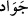

için alış veriş kapısı kapanır. Bu durum halkın yararına değildir. O, dünyayı îmâr eder,
mal ve evlatlarda insanlara ortak olur.”
Allah Teâlâ buyurur ki: “Onların mallarına ve evlatlarına ortak ol” (el-İsrâ 17/64).
Bu hikâyeden Süleyman (a.s.)’ın gerçekte hükümdarlığa çok fazla önem vermeyen ve
mal-mülkten uzak bir zat olduğu anlaşılır.
Mâdem ki gönlün her saat başka bir tarafa gidiyor,
Safâ içinde yalnızlık göremezsin.
Sen mal, makam, zirâat ve ticâretle uğraşırken,
Gönlün Allah ile oluyorsa halvettesin demektir.
31. Akşama doğru kendisine, üç ayağının üzerine durup bir ayağını tırnağının
üzerine diken çalımlı ve safkan koşu atları sunulmuştu.
Yâni bu atlar kendisine gösterildiğinde takındığı tavrı yâd et. (
) ifâdesi,
“zâhir oldu” anlamına gelir; (
) ifâdesi ise “ben ızhâr ettim”, anlamındadır.
Komutan askere yanında toplanmasını emredip ne durumda olduklarını kontrol ettiğinde
de (
) denir.
(
) kelimesi öğle vaktinden günün sonuna kadarki zaman dilimidir. (
)
kelimesi (
) kelimesinin değil, (
) kelimesinin çoğuludur. Çünkü bu kelime
erkek atlar için kullanılır. Akıl taşımayan müzekker kelimelerin sıfatı da -nahivden de
bilineceği üzere- devamlı bu şekilde çoğul yapılır. (
) kelimesi ise bir şeyi,
parçaları biribirine eklenmiş olarak biraraya getirmek anlamındadır. At üç ayağını yere
basıp dördüncüsünü tuttuğunda, yâni tırnaklarından birini değiştirip ön veya arka
tırnaklarının ucunu (sünbük) yere koyduğunda (
) denir. Bu, atlarda
bulunan güzel sıfatlardan olup mezkûr duruşa hâlis Arap atlarından başkasında pek
rastlanmaz. Yâni atlar, üç ayağı üzerine, dördüncü ayak tırnağın (toynağın) ucunda
olarak dururlar.
(
) kelimesi (
) ve (
) kelimelerinin çoğuludur. Cömertçe, sağanak hâlinde
yağan yağmura benzetilerek hızlı koşan atlara (
) denmiştir. Yâni Güzel renkli, güzel
boylu, hızlı koşan atlar anlamına gelir. Keşfü’l-esrâr’ın yazarı da bu görüştedir. Öyle
anlaşılıyor ki kelimede “kaliteli” (
) ve “cömert” (
) anlamları birlikte
düşünülmüştür.
el-Kâmûs’ta der ki: “(
) erkek ve dişi cömert anlamındadır. Çoğulu, (
)
şeklindedir. (
) ise âdînin zıttı olup çoğulu (
)’dır. (
)’ın, yarış yâni koşu